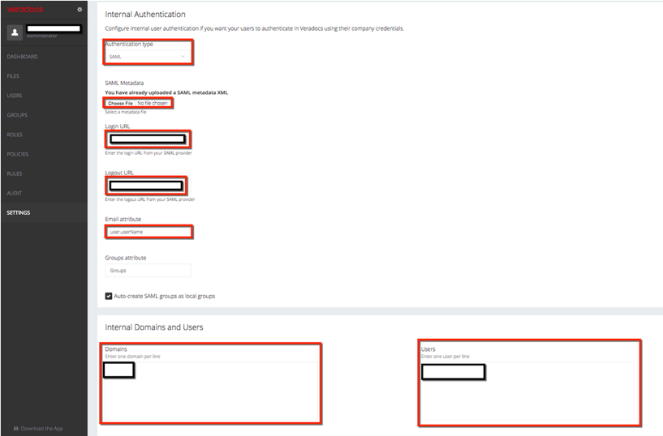
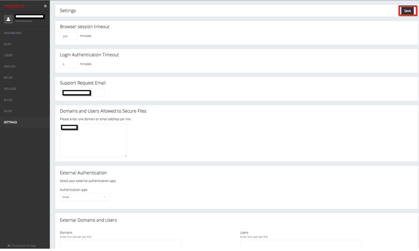
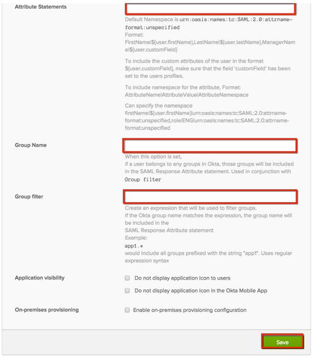

This setup might fail without parameter values that are customized for your organization. Please use the Okta Administrator Dashboard to add an application and view the values that are specific for your organization.
Case 1: For groups not using Group Push
Copy the following IDP Metadata and save as an xml file:
Log in to your Veradocs account.
Navigate to the Settings page:
On the Settings page, navigate to the Internal Authentication section.
Enter the following values into the corresponding fields (see screen capture at end of step for reference):
Authentication type: SAML
SAML Metadata: Click Choose file, and upload the xml file you saved in step 1.
Copy the following into the Login URL field:Sign into the Okta Admin Dashboard to generate this variable.
Copy the following into the LogoutURL field:Sign into the Okta Admin Dashboard to generate this variable.
Email attribute: Enter user.userName
Groups attribute: Leave the default values.
Internal Domains and Users: Enter the domain name of the username that will be using SAML to access the account. For example, if the username is johnDoe@MyCompany.com, enter MyCompany.com in this field. Or, you can also manually enter the usernames of all the users who will be using SAML under the Users section.

Click Save in the top right corner. 
Done!
Case 2: With groups using Group Push
Sign into Okta and create a Template SAML 2.0 App.
Enter the following values to the following fields in the General Settings for the new Template SAML 2.0 App. See the screen shots in line for reference.
Application label: The name that will appear under the app on the Veradocs home page.
Post Back URL: https://<yourSubDomain>.veradocs.com/api/req/verify
Group Name: Enter the group names that you would like to pass from Okta to Veradocs
Group filter: Enter an expression that will be used to filter groups. For example: app1.* includes all groups prefixed with the string app1. This field accepts regular expression syntax
Application Visibility: Leave unchecked

Select Save.
Assign the application to a user, then click Done.
Select the Applications > Sign On tab then select View Setup Instructions. Scroll down to the Configuration Data section to retrieve the data you'll need for the next step.
Login to your Veradocs account, and follow the instructions outlined in Case 1: For groups not using Group Push above, except use the data in the setup instructions you just opened for the values for Login URL, Logout URL, and so on.
Done!
Notes:
SP-initiated flows and Just in Time (JIT) provisioning are supported.